長期トレンド
JKMとJEPXシステムプライスの推移グラフ
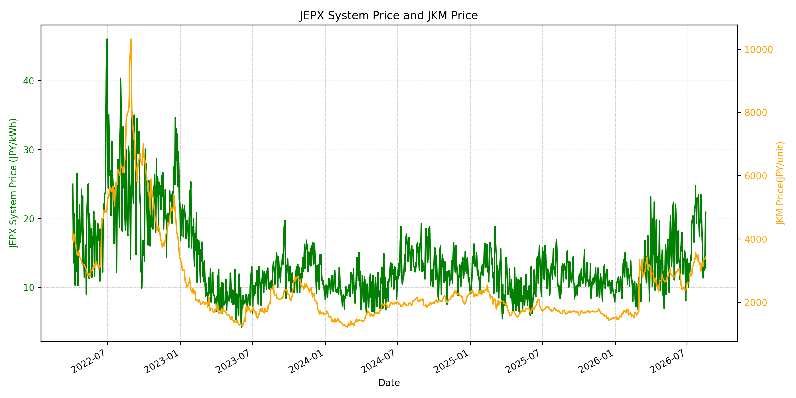
WTIの推移グラフ
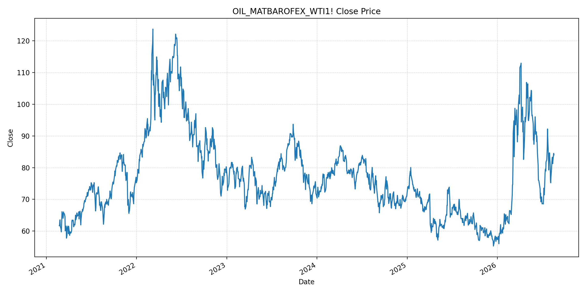
JEPXエリアプライスグラフ（直近一年分）
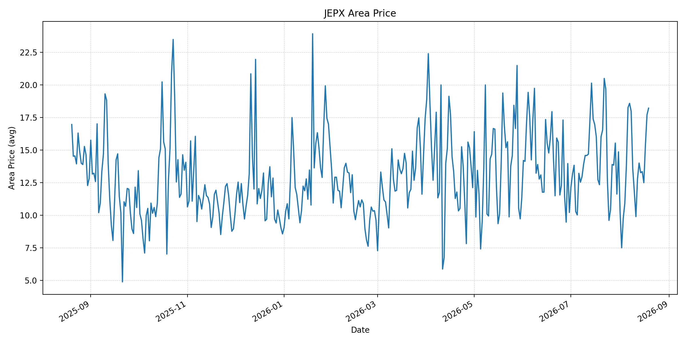
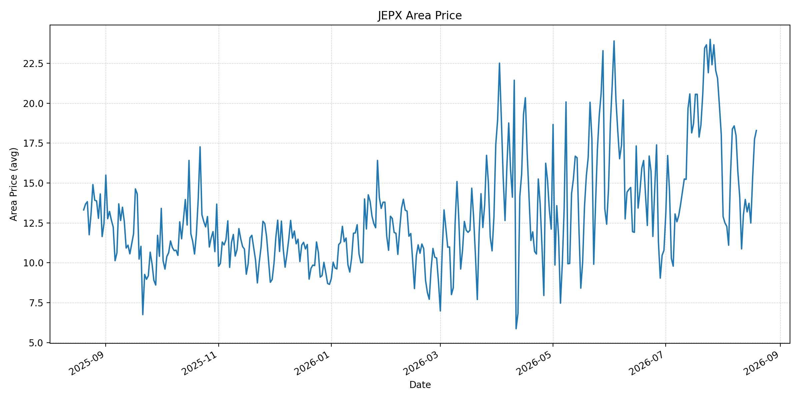
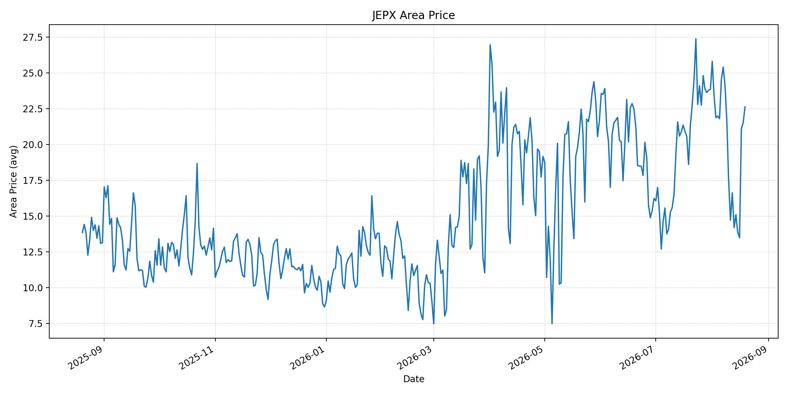
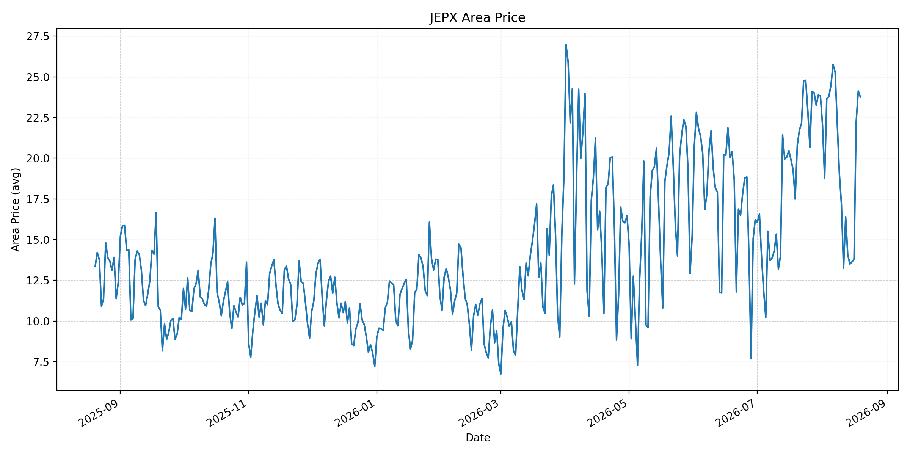
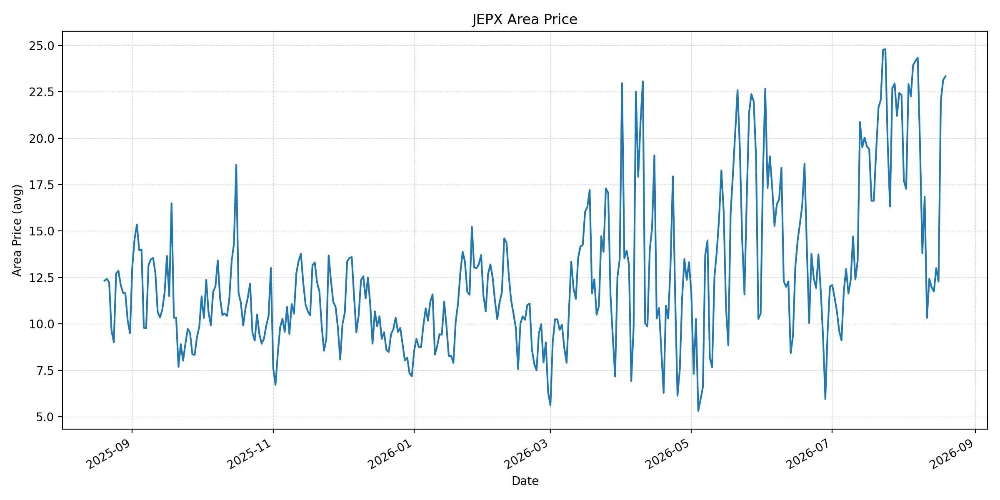
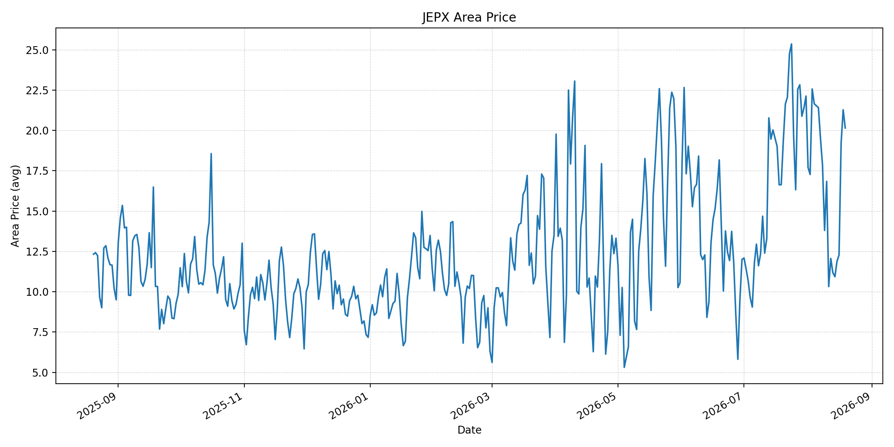
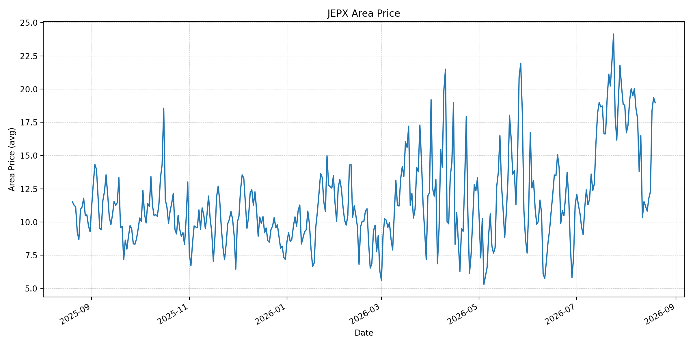
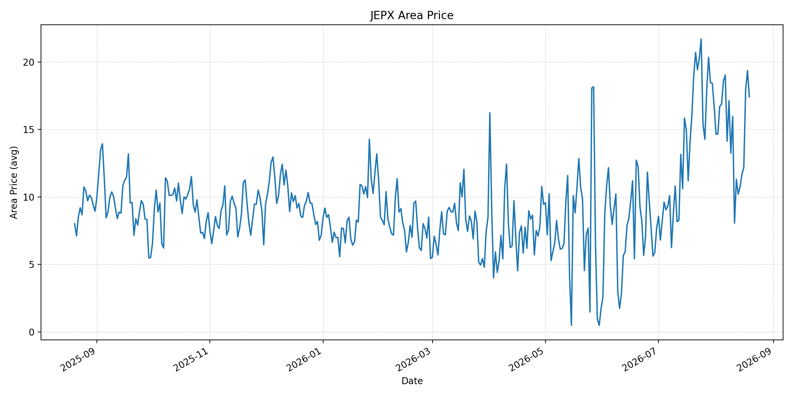
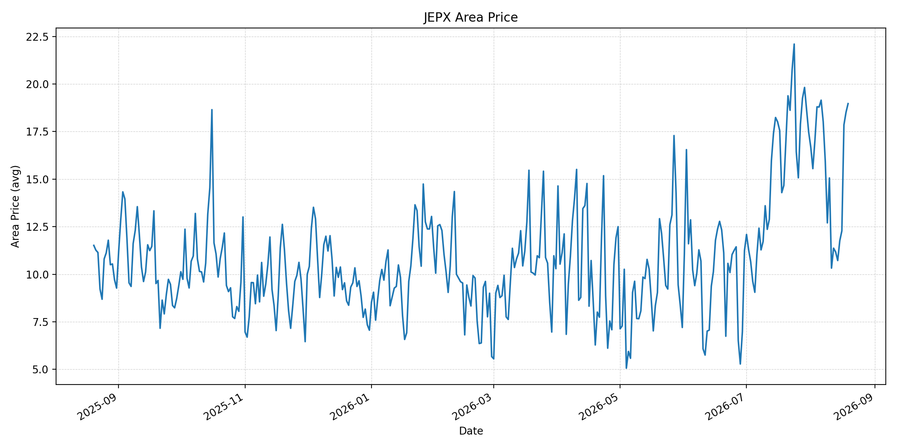
短期トレンド
JKMとJEPXシステムプライスの推移グラフ
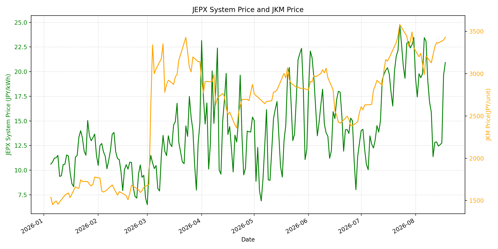
WTIの推移グラフ
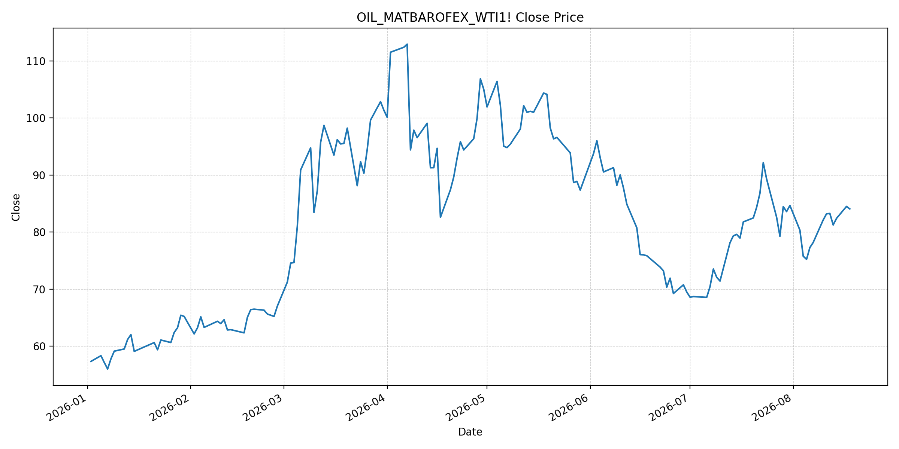
JEPXシステムプライス
JEPXは受渡日ベースの最新非空値で評価しています。最新値は 2026-08-19 分です。先週終値は 2026-08-12、先月終値は 2026-07-31 時点の直近値で評価しています。
| エリア | 当日価格 | 前日価格 | 前日比（％） | 先週終値 | 先週比（％） | 先月終値 | 先月比（％） | 過去最高値 | 最高値比（％） |
|---|---|---|---|---|---|---|---|---|---|
| システム | 21.61 | 20.92 | 3.30 | 12.82 | 68.56 | 23.48 | -7.96 | 64.06 | -66.27 |
| 北海道 | 18.21 | 17.70 | 2.88 | 12.79 | 42.38 | 14.86 | 22.54 | 73.92 | -75.36 |
| 東北 | 18.29 | 17.75 | 3.04 | 13.01 | 40.58 | 18.04 | 1.39 | 84.92 | -78.46 |
| 東京 | 22.62 | 21.53 | 5.06 | 16.62 | 36.10 | 23.85 | -5.16 | 86.13 | -73.74 |
| 中部 | 23.76 | 24.13 | -1.53 | 16.41 | 44.79 | 23.83 | -0.29 | 52.06 | -54.36 |
| 北陸 | 23.33 | 23.13 | 0.86 | 12.42 | 87.84 | 22.32 | 4.53 | 46.48 | -49.81 |
| 関西 | 20.15 | 21.28 | -5.31 | 12.06 | 67.08 | 22.13 | -8.95 | 46.48 | -56.65 |
| 中国 | 18.97 | 19.37 | -2.07 | 11.53 | 64.53 | 18.78 | 1.01 | 46.48 | -59.19 |
| 四国 | 17.42 | 19.37 | -10.07 | 11.31 | 54.02 | 16.74 | 4.06 | 46.48 | -62.53 |
| 九州 | 18.97 | 18.51 | 2.49 | 11.37 | 66.84 | 17.46 | 8.65 | 40.54 | -53.21 |
LNG先物価格
最新値は 2026-08-18 の LNG(close) です。前日価格は 2026-08-17、先週終値は 2026-08-10、先月終値は 2026-07-31 時点の直近値で評価しています。
| 当日価格 | 前日価格 | 前日比（％） | 先週終値 | 先週比（％） | 先月終値 | 先月比（％） | 過去最高値 | 最高値比（％） |
|---|---|---|---|---|---|---|---|---|
| 3431.00 | 3398.00 | 0.97 | 3129.00 | 9.65 | 3307.00 | 3.75 | 10319.00 | -66.75 |
石油先物価格
最新値は 2026-08-18 の OIL(close) です。前日価格は 2026-08-17、先週終値は 2026-08-11、先月終値は 2026-07-31 時点の直近値で評価しています。
| 当日価格 | 前日価格 | 前日比（％） | 先週終値 | 先週比（％） | 先月終値 | 先月比（％） | 過去最高値 | 最高値比（％） |
|---|---|---|---|---|---|---|---|---|
| 84.06 | 84.50 | -0.52 | 83.20 | 1.03 | 84.67 | -0.72 | 123.70 | -32.05 |
ニュース
イラン情勢に関するニュース
- オマーンはイランとホルムズ海峡の船舶通航を管理する合意に近づいているとされますが、米国は共同管理を含む内容に反発しています。合意の公表・実施時期は依然として不透明です。参照: AP, 2026-08-18
- 米・イランの協議再開を巡る見解の隔たりが続き、海峡を巡る外交・安全保障上の緊張はなお高い状態です。参照: AP, 2026-08-18
ホルムズ海峡経由の石油・LNGに関するニュース
- 海峡を出航中の船舶への飛翔体の着弾と、イエメン沖での貨物船被害が報じられました。通航管理の協議だけでは、船舶安全や保険コストの不確実性を解消できない状況です。参照: AP, 2026-08-18
- Kpler集計では、先週のホルムズ海峡の確認済み通航は95隻で前週比19.5%減、日曜日は3隻にとどまりました。イラン指定航路での通航に偏っており、石油・LNGの輸送回復は脆弱です。参照: AP, 2026-08-18
ホルムズ海峡経由でない石油・LNGに関するニュース
- バブエルマンデブ海峡の確認済み通航は前週比6.7%増の254隻でした。一方で、ホルムズ海峡の不安定化が続くため、同ルートを含む代替航路の安全・保険コストも継続的な監視が必要です。参照: AP, 2026-08-18
- 過去24時間で、ホルムズ以外の石油・LNG供給量を直接変える主要な新規公表は確認できませんでした。
日本国内のイラン戦争に関係するニュース
- 過去24時間で、JEPX制度、国内電力需給ルール、または日本政府のイラン戦争関連対策を直接変更する主要な新規公表は確認できませんでした。
- 経済産業省は6月時点で、備蓄を活用すれば保守的な調達想定でも2027年度末まで安定供給が可能との見通しを示しています。備蓄は数量面の緩衝材ですが、航路安全に起因する調達・保険コストを直接抑えるものではありません。参照: METI, 2026-06-16
インサイト
ニュース事項による日本の電力市場への影響（短期：数日〜1週間）
- JEPXシステムプライスは 21.61 円/kWhで前日比 3.30%、先週比 68.56% と上昇しました。中部 23.76 円/kWh、北陸 23.33 円/kWh、東京 22.62 円/kWhが高水準で、需給の引き締まりが続いています。
- LNGは 3431.00 で先週比 9.65%、WTIは 84.06 ドルで 1.03% 上昇しました。通航量の低下と船舶攻撃は短期の燃料リスクプレミアムを支える要因です。
- 数日から1週間では、通航管理合意の正式化と安全な実運用が下振れ要因となる一方、協議の決裂、船舶被害の拡大、保険条件の悪化が上振れ要因です。
ニュース事項による日本の電力市場への影響（長期：1ヶ月〜半年）
- JEPXシステムは先月比 -7.96%、LNGは 3.75%、WTIは -0.72% です。継続的かつ安全な通航が確認されれば火力限界費用の上昇圧力は和らぎますが、通航量が低位にとどまれば燃料調達の不確実性は残ります。
- 北海道は先月比 22.54%、九州 8.65%、北陸 4.53% と上昇する一方、関西 -8.95%、東京 -5.16% と低下しています。燃料価格の地域波及は一様ではなく、エリア別需給を併せて確認する必要があります。
- 過去最高値比ではシステム -66.27%、LNG -66.75%、WTI -32.05% です。1ヶ月から半年は、ホルムズの実通航量、船舶の安全確保、国内在庫の補充速度を分けて監視することが重要です。